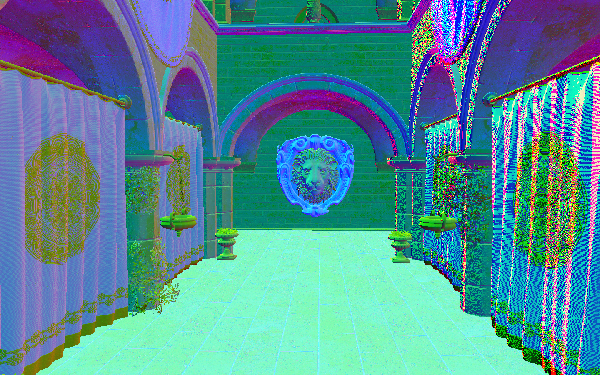
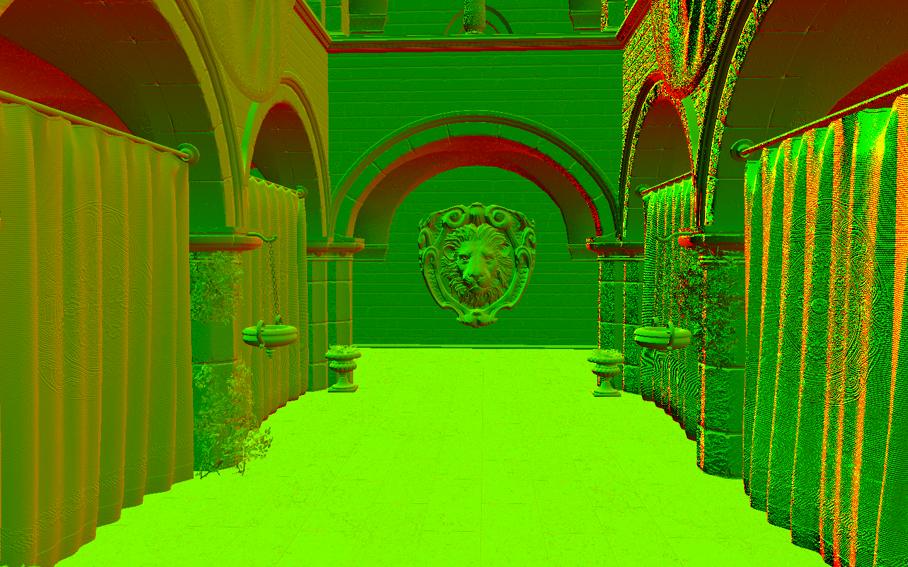
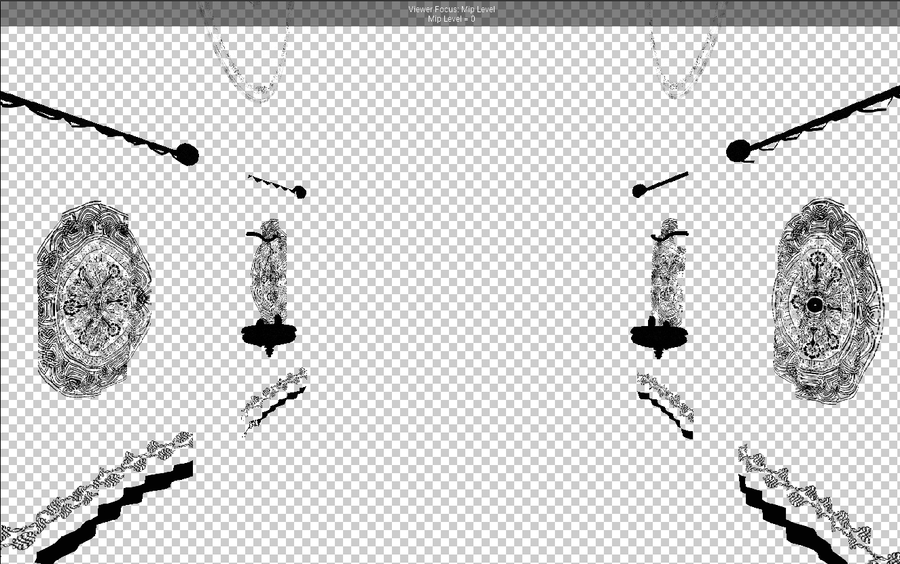
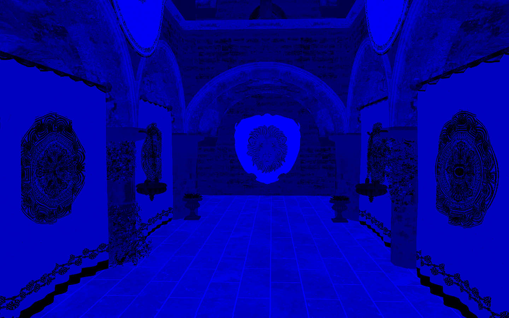
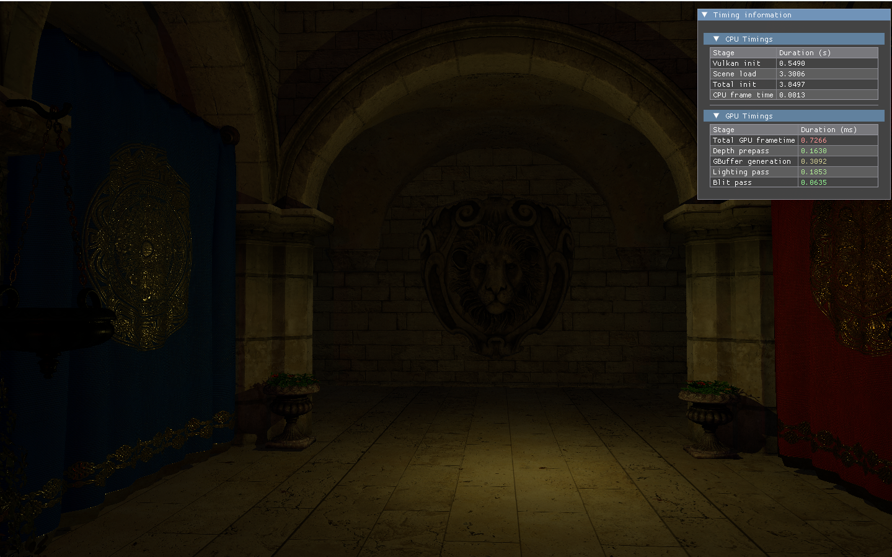

Improved Vulkan Renderer
Jun 2025 · in progress
Developed on his own terms as an improved version of a renderer made for college, learning from mistakes made there.
Uses his own vulkan-classes library, fetched automatically through CMake. Intended for future use as a base project in further Vulkan research topics.
Render passes




